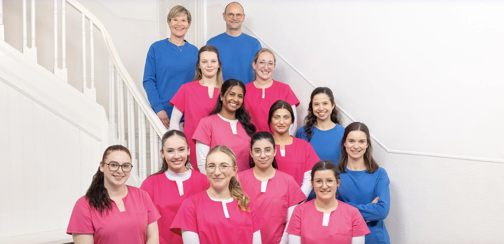
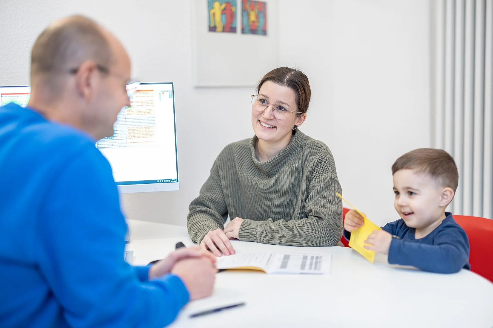

Die ersten Monate
U-Untersuchungen im dichten Takt, Fragen zu Schlaf, Trinken und Gewicht. Die Zeit, in der Eltern am meisten Rückversicherung brauchen — und bekommen.
Kinder- und Jugendmedizin · Düsseldorf-Oberkassel
Wir begleiten Kinder und Jugendliche durch alle Entwicklungsphasen — mit einem Team, das die Familien kennt, und einer eigenen Sprechstunde für Jugendliche.

Was ein Kind braucht, ändert sich ständig — die Menschen, die es betreuen, sollten es nicht. Wir sehen Familien oft über den gesamten Zeitraum.
U-Untersuchungen im dichten Takt, Fragen zu Schlaf, Trinken und Gewicht. Die Zeit, in der Eltern am meisten Rückversicherung brauchen — und bekommen.
Impfungen, Infekte, Entwicklungsschritte. Hier zeigt sich, was ein fester Ansprechpartner wert ist: Wir kennen die Vorgeschichte, ohne dass Sie sie erzählen müssen.
Vorsorge, Sportfähigkeit, Allergien, gelegentlich auch Fragen zu Konzentration und Verhalten. Wir schauen hin, bevor daraus etwas Größeres wird.
Ab einem gewissen Alter gibt es Themen, die nicht vor den Eltern besprochen werden sollen. Dafür haben wir eine eigene Sprechstunde eingerichtet.
Von der U-Untersuchung über Impfungen bis zur Beratung bei Entwicklungsfragen — in einer Praxis und mit denselben Gesichtern.
Alle U-Untersuchungen von U2 bis J2 — regelmäßig, gründlich und ohne Zeitdruck.
Alle von der STIKO empfohlenen Impfungen, mit Beratung zu jedem einzelnen Schritt.
Wenn es schnell gehen muss: kurzfristige Termine bei akuten Erkrankungen.
Die ersten Monate sind besonders. Wir nehmen uns Zeit für Ihre Fragen — auch für die, die man sich kaum zu stellen traut.
Diagnostik und Behandlung bei allergischen Erkrankungen und Atemwegsbeschwerden.
Bei Fragen zu Sprache, Motorik oder Verhalten schauen wir gemeinsam hin und ordnen ein.

Hier geht es um Fragen zu Körper und Entwicklung, um Haut, Sport, Ernährung oder Schlaf — und um alles andere, was gerade wichtig ist. Vertraulich, ohne Bewertung, in Ruhe.
Die ärztliche Schweigepflicht gilt auch gegenüber den Eltern. Das ist keine Formalie, sondern die Voraussetzung dafür, dass ein Gespräch überhaupt möglich wird.
Erreichbarkeit
Sprechzeiten
Privatsprechstunde nach Vereinbarung. Anfahrt: U70, U75, U76, U77 sowie Bus 828, 833, 834, 862 bis Haltestelle Belsenplatz.
Buchen Sie Ihren Termin online oder rufen Sie uns an. Neue Familien sind willkommen.
Termin buchen